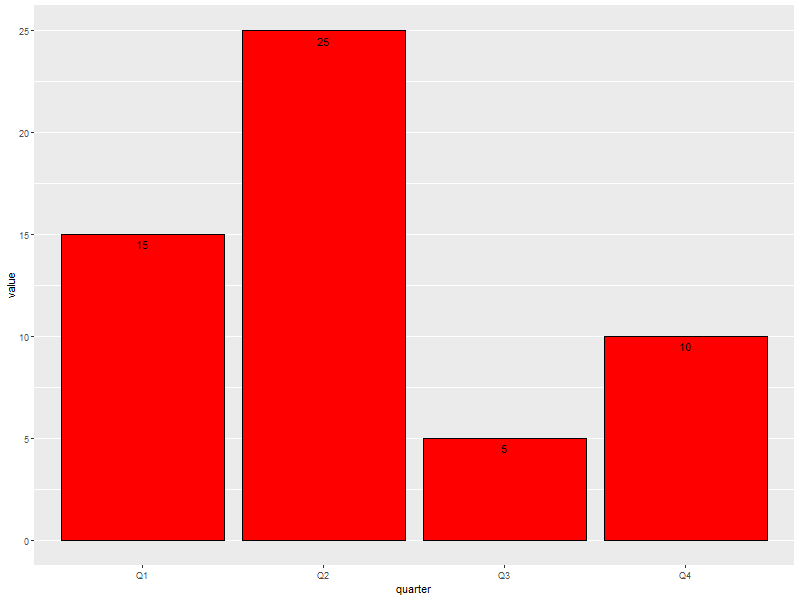

Examples For ggplot2
| Author: | Mitch Richling |
| Updated: | 2021-05-04 |
Copyright 2020 Mitch Richling. All rights reserved.
Table of Contents
- 1. Source Code and Files
- 2. Setup
- 3. Two Corrilated Variables
- 3.1. x-y scatter plot
- 3.2. Time Series scatter plot broken down by a factor (Fancy Axis)
- 3.3. x-y scatter plot broken down by a factor (Fancy Axis)
- 3.4. x-y scallter plot broken down by factor (fancy titles)
- 3.5. x-y scatter plot with facets instead of color.
- 3.6. x-y scatter plots with facets and trends (lowess & linear regression)
- 3.7. Simple x-y graphs with linear regression lines
- 3.8. linear regression used for future prediction
- 4. Distribution Comparison
- 5. 2D Data
- 5.1. Images
- 5.1.1. Simple Example
- 5.1.2. A dot in each cell scaled to
abs(z) - 5.1.3. White text in each cell
- 5.1.4. Text in each cell with a color set by the z value
- 5.1.5. Contours in white
- 5.1.6. Contours in white (via
stat_contourinstead ofgeom_tile) - 5.1.7. Just contour lines colored determined by contour level
- 5.2. Histograms
- 5.1. Images
- 6. Barcharts
- 7. 1D Histograms
- 8. Pallets
- 9. Miscellaneous Stuff
- 10. Area graphs
1 Source Code and Files
2 Setup
2.1 Load libraries
ggplot2 is the graphics library, and gridExtra helps us lay things out.
library(ggplot2) library(gridExtra) library(reshape2) library(scales)
2.2 Create some data sets we can graph
numPnt <- 1000 numCat <- 4 someData <- data.frame(xi=(1:numPnt)/numPnt, xi2=(1:numPnt)/numPnt+2, xd=seq(as.POSIXct('2012-01-01'), by='day', length.out=numPnt), rn=runif(numPnt, -.6, .6), m=rep(1:numCat,(numPnt/numCat))) someData$rm <- someData$rn*someData$m someData$y <- someData$m*(someData$xi-0.5)+0.5+someData$rm someData$y2 <- 2.5*(someData$xi-0.5)+0.5 someData$k1 <- paste('K1F', someData$m, sep='_') someMoreData <- read.table(header=T, text=' quarter factors value emin emax Q1 factor1 15 14 16 Q2 factor1 25 22 29 Q3 factor1 5 1 6 Q4 factor1 10 8 11 Q1 factor2 25 22 23 Q2 factor2 20 19 21 Q3 factor2 25 20 26 Q4 factor2 10 10 11 ') someLessData <- subset(someMoreData, someMoreData$factors=='factor1') someLessData$factors <- factor(someLessData$factors) twoDimData <-expand.grid(x=seq(from=-4, to=4, length.out=30), y=seq(from=-3, to=5, length.out=30)) twoDimData$z<-sin(twoDimData$x*twoDimData$x+twoDimData$y*twoDimData$y) twoDimData$p<-sign(twoDimData$z) volcanoDF <- stack(as.data.frame(volcano)) volcanoDF$x <- rep(seq_len(nrow(volcano)), ncol(volcano)) volcanoDF$y <- rep(seq_len(ncol(volcano)), rep(nrow(volcano), ncol(volcano))) twoDimNormal <- data.frame(x=rnorm(10000, sd=2.0), y=rnorm(10000)) twoDimNormal$y <- twoDimNormal$y+twoDimNormal$x*.75
3 Two Corrilated Variables
3.1 x-y scatter plot
ggplot(data=someData, aes(x=xi, y=y)) + geom_point(col='red') ## Make the points RED -- very diffrent: geom_point(aes(col='red'))
3.2 Time Series scatter plot broken down by a factor (Fancy Axis)
ggplot(data=someData, aes(x=xd, y=y, col=k1)) + scale_x_datetime(breaks = scales::date_breaks("1 year"), ## Set major break lines to 1 year minor_breaks = scales::date_breaks("1 month"), ## Set minor break lines to 1 year labels = scales::date_format("%Y")) + ## Set the date format geom_point(size=3, pch=21) + ## BIG Circles for points scale_colour_discrete(name ="Legend Title\nLine 2", breaks=c("K1F_4", "K1F_1", "K1F_2", "K1F_3"), labels=c("k1f_4", "k1f_1", "k1f_2", "k1f_3"))
3.3 x-y scatter plot broken down by a factor (Fancy Axis)
ggplot(data=someData, aes(x=xi, y=y, col=k1)) + geom_point() + #theme(panel.grid.major=element_blank()) ## Zap major grid lines #theme(panel.grid.minor=element_blank()) ## Zap minor grid lines #theme(axis.ticks=element_blank()) ## x-axis: Zap ticks #theme(axis.text.x=element_blank()) ## x-axis: Zap Labels scale_y_continuous(breaks=c(1, 1.5, 2.5, 5, 6,8)) ## y-axis: Set location for ticks and grid lines #scale_y_continuous(breaks=NULL) ## Zap y tick and grid lines #scale_x_continuous(breaks=NULL) ## Zap x tick and grid lines #scale_x_continuous(limits=c(-1, 2)) ## Remove data outside the limits #xlim(NA, 2) ## Like above. Use NA to not set limit. #coord_cartesian(xlim = c(-1, 2)) ## Simply set the visible region.
3.4 x-y scallter plot broken down by factor (fancy titles)
Adding a 'ribbon' of color to a plot (useful for things like confidence intervals and ranges around a smoother). Also demo some crazy title and legend stuff.
ggplot(data=someData, aes(x=xd)) + geom_ribbon(aes(ymin=y2-1, ymax=y2+1), alpha=.3, fill='pink', col='grey') + ## alpha is important geom_point(aes(y=y, col=k1)) + ## Colorful points geom_line(aes(y=y2), col='black') + ## Center line labs(title = "Title\nLine 2 Of Title", subtitle = "Subtitle", tag = 'TAG TAG\nTAG TAG\nTAG TAG\n', x = 'x-title\nLine 2 Of x-title', y = 'y-title\nLine 2 Of y-title', caption = "Caption Line 1 Caption Line 1 Caption Line 1\nCaption Line 3\nCaption Line 4") + theme(plot.title = element_text(lineheight=0.7, face="bold", colour="#aa0000", size=20, angle=0)) + theme(plot.subtitle = element_text(lineheight=0.7, face="bold", colour="#fa0000", size=18, angle=0)) + theme(plot.caption = element_text(lineheight=0.8, face="plain", colour="#0000aa", size=12, angle=0)) + theme(plot.tag = element_text(lineheight=0.7, face="plain", colour="#00aa00", size=12, angle=0)) + theme(axis.title.x = element_text(lineheight=0.7, face="plain", colour="#ffa000", size=18, angle=0)) + theme(axis.title.y = element_text(lineheight=0.7, face="italic", colour="#ff00a0", size=18, angle=90)) + theme(axis.text.x = element_text(angle=0, color='red', vjust=0.5, size=10)) + theme(axis.text.y = element_text(angle=0, color='brown', vjust=0.5, size=10)) + #theme(legend.title=element_blank()) + ## This is how you nix a legend title entirely guides(col=guide_legend(title="HELLO")) + theme(legend.title = element_text(colour="#00ffa0", size=10, face="bold.italic"), legend.text = element_text(colour="#60ff00", size=8, face="plain"), legend.position="right") ## Put the legend on the right side of the graph
3.5 x-y scatter plot with facets instead of color.
ggplot(data=someData, aes(x=xd, y=y, col=k1)) + ## col=k1 has nothing to do with facets geom_point() + facet_wrap(~k1, ncol=2) + ## Gets facets in a grid #facet_grid(.~k1) + ## Gets facets arranged left to right #facet_grid(k1~.) + ## Gets facets arranged top to bottom labs(title = 'Main Title', x = 'X Title', y = 'Y Title') + theme(strip.text.x = element_text(size=8, face="plain", colour='red', angle=0), ## y-axis strip text strip.text.y = element_text(size=8, face="bold", colour='blue', angle=90), ## y-axis strip text strip.background = element_rect(colour="blue", fill="pink")) ## Strip border and fill
3.6 x-y scatter plots with facets and trends (lowess & linear regression)
ggplot(data=someData, aes(x=xd, y=y)) + geom_point(col='pink') + ## Draw the points in pink #geom_smooth(method="loess") + ## DEFAULT. lowess. Show confidence interval. #geom_smooth(method="lm") + ## Linear model geom_smooth(method="lm", level=0.9999) + ## Linear model with explicit confidence level #geom_smooth(method="lm", se=FALSE) + ## Don't show the confidence interval #geom_smooth(method="gam", formula = y~s(x)) + ## Generalised additive model. Needs library(mgcv) #geom_smooth(method="rlm") + ## Robust linear regression. Needs library(MASS) facet_wrap(~k1, ncol=2)

3.7 Simple x-y graphs with linear regression lines
ggplot(data=someData, aes(x=xd, y=y, col=k1)) + geom_point() + ## Draw points geom_smooth(method="lm", se=FALSE) ## Don't show the confidence interval #geom_smooth(method="loess", span=.2, se=FALSE) ## lowess. No confidence interval
3.8 linear regression used for future prediction
expandedRange <- c(min(someData$xi), ## Range from min to max+1/2 the range. max(someData$xi) + diff(range(someData$xi))/2) ggplot(data=someData, aes(x=xi, y=y)) + scale_x_continuous(limits = expandedRange) + ## Extend the x-axis. coord_cartesian won't work here. #geom_line() + ## Add this if you want to connect the dots. ;) geom_point() + ## You can also use points! geom_smooth(method="lm", fullrange=TRUE, level=0.99) ## Linear model with a .99 confidence interval
4 Distribution Comparison
4.1 Box-n-Wisker
ggplot(data=someData, aes(x=k1, y=y)) + geom_boxplot(col='red', fill='pink')
4.2 Colorful Box-n-Wisker
ggplot(data=someData, aes(x=k1, y=y, fill=k1))+ geom_boxplot(show.legend=FALSE) ## Suppress the legend
4.3 Category labels on the axis with no legend
ggplot(data=someData, aes(x=k1, y=y, fill=k1)) + geom_boxplot(col='black', alpha=.4, show.legend=FALSE) + scale_x_discrete(labels=c("x1", "x2", "x3", "x4")) + scale_fill_discrete(name="Title\nSecond Line Of Title", ## Set title of legend labels=c("x1", "x2", "x3", "x4")) ## Set labels of legend
4.4 Category labels on the axis with no legend
ggplot(data=someData, aes(x=k1, y=y, fill=k1)) + geom_boxplot(col='black', alpha=.4) + scale_x_discrete(breaks=NULL) + ## x-axis: Zap the lables all togehter scale_fill_discrete(name="Title\nSecond Line Of Title", ## Set title of legend labels=c("x1", "x2", "x3", "x4")) ## Set labels of legend
4.5 A standard violin plot
Note: The white borders help the regions stand out
ggplot(data=someData, aes(x=k1, y=y, fill=k1)) + geom_violin(col='white', ## Add white border on the violins show.legend=FALSE) ## Suppress the legend
4.6 Combine a violin and box-n-wisker plot
ggplot(data=someData, aes(x=k1, y=y, fill=k1)) + geom_boxplot(col='black', alpha=.4) + geom_violin(alpha=.25, col=NA) + theme(legend.position="none")
5 2D Data
5.1 Images
5.1.1 Simple Example
ggplot(data=twoDimData, aes(x=x, y=y, fill=z)) + geom_tile() #geom_raster() ## geom_raster() is faster, but requires length(x)==length(y)
5.1.2 A dot in each cell scaled to abs(z)
ggplot(data=twoDimData, aes(x=x, y=y)) +
geom_tile(aes(fill=z)) +
geom_point(aes(size=abs(z)), col='red')
5.1.3 White text in each cell
ggplot(data=twoDimData, aes(x=x, y=y)) +
geom_tile(aes(fill=z)) +
geom_text(aes(label=p), col='white', size=4)

5.1.4 Text in each cell with a color set by the z value
ggplot(data=twoDimData, aes(x=x, y=y)) + geom_tile(aes(fill=z)) + geom_text(aes(label=p), col=c('red', 'black', 'green')[sign(twoDimData$z)+2], size=4)
5.1.5 Contours in white
ggplot(data=volcanoDF, aes(x=x, y=y)) + geom_raster(aes(fill=values), interpolate=TRUE) + # tile has no "interpolate" option. geom_contour(aes(z=values), col='white', size=1)
5.1.6 Contours in white (via stat_contour instead of geom_tile)
ggplot(data=volcanoDF, aes(x=x, y=y, z=values)) + stat_contour(geom="polygon", aes(fill=..level..)) + stat_contour(col='white', size=1)
5.1.7 Just contour lines colored determined by contour level
ggplot(data=volcanoDF, aes(x=x, y=y, z=values)) + geom_contour(aes(col=..level..), size=2) ## Fatten up the line so the color shows up
5.2 Histograms
5.2.1 Rectangular or hexagon bins
ggplot(data=twoDimNormal, aes(x=x,y=y)) + #geom_rug() + ## Add a rug (dot-plot) to each axis for lower density plots stat_bin2d(aes(fill=..count..)) ## Use this for rectangular bins! #stat_binhex(aes(fill=..count..)) ## Use this for hexagon bins.
5.2.2 Density Estimation via scatterplot with semi-transparent data points
ggplot(data=twoDimNormal, aes(x=x,y=y)) + geom_point(alpha=.2, col='red') + ## Alpha to visually indicate density #geom_rug() + ## Add a rug (dot-plot) to each axis for lower density plots geom_density2d(col='black', size=1) ## Put contour lines after points to make sure we can see them.
5.2.3 Density Estimation via a filled contour graph
ggplot(data=twoDimNormal, aes(x=x,y=y)) + geom_point(alpha=.5, col='black') + ## Show outlier with dots (must be first) #geom_rug() + ## Add a rug (dot-plot) to each axis for lower density plots stat_density2d(aes(fill = ..level..), ## Fill in the contour graph -- covering up non-outlier points. geom="polygon", col='white')
5.2.4 Scatter plot with marginal histograms
histTop <- ggplot(twoDimNormal) + ## Create histogram that goes at the top geom_histogram(aes(x=x), col='white', fill='red', binwidth=diff(range(twoDimNormal$x))/50) + theme(axis.ticks = element_blank(), axis.text.x = element_text(margin=margin(0,0,0,0,"pt")), plot.margin = unit(c(0,0,0,0),"lines"), axis.title.x = element_blank(), axis.text.y = element_blank(), axis.title.y = element_blank(), axis.ticks.length = unit(0,"null")) + scale_x_continuous(limits=range(twoDimNormal$x)) histRight <- ggplot(twoDimNormal) + ## Create histogram that goes at the right geom_histogram(aes(x=y), col='white', fill='red', binwidth=diff(range(twoDimNormal$y))/50) + coord_flip() + theme(axis.text.x = element_blank(), axis.text.y = element_text(margin=margin(0,0,0,0,"pt")), axis.ticks = element_blank(), plot.margin = unit(c(0,0,0,0),"lines"), axis.title.x = element_blank(), axis.title.y = element_blank(), axis.ticks.length = unit(0,"null")) + scale_x_continuous(limits=range(twoDimNormal$y)) maxCount = max(c(max(ggplot_build(histTop)$data[[1]]$count), ## Set idential scales for histograms max(ggplot_build(histRight)$data[[1]]$count))) histTop <- histTop + scale_y_continuous(limits=c(0,maxCount+1)) histRight <- histRight + scale_y_continuous(limits=c(0,maxCount+1)) scatter <- ggplot(twoDimNormal)+ ## Create scatter plot in the center. geom_point(aes(x=x,y=y), col=rgb(1,0,0,.05)) + theme(axis.text.x = element_blank(), axis.ticks = element_blank(), plot.margin = unit(c(0,0,0,0),"lines"), axis.title.x = element_blank(), axis.text.y = element_blank(), axis.title.y = element_blank(), axis.ticks.length = unit(0,"null")) + scale_x_continuous(limits=range(twoDimNormal$x)) + scale_y_continuous(limits=range(twoDimNormal$y)) aGrob <- arrangeGrob(histTop, ## Put it all together grob(), scatter, histRight, ncol=2, nrow=2, widths=c(3, 1), heights=c(1, 3)) grid.newpage() grid.draw(aGrob)
6 Barcharts
6.1 With pre-computed data
ggplot(data=someLessData, aes(x=quarter, y=value)) + geom_bar(stat='identity', col='black', fill='red') + ## Draws red bars with black borders geom_text(aes(label=value), vjust='top', nudge_y=-0.25) + ## Adds the numerical label to each bar theme(panel.grid.minor.x=element_blank(), ## Get rid of the vertical grid lines panel.grid.major.x=element_blank())

6.2 Barcharts with pre-computed data with color filled bars
ggplot(data=someLessData, aes(x=quarter, y=value, fill=quarter)) + geom_bar(stat='identity', col='black', show.legend=FALSE) + ## col for black lines between bars geom_label(aes(label=value), fill='white', vjust='center') + ## Number on each bar theme(panel.grid.minor.x=element_blank(), ## Get rid of the vertical grid lines panel.grid.major.x=element_blank())
6.3 Stacked barchart
Note: This form of barchart is easily misread by may people. Not generally recommended.
ggplot(data=someMoreData, aes(x=quarter, y=value, fill=factors)) + guides(fill=guide_legend(override.aes=list(colour=NA))) + ## Zap slash across the legend color boxes geom_bar(stat='identity', col='black', position="stack") + theme(panel.grid.minor.x=element_blank(), ## Get rid of the vertical grid lines panel.grid.major.x=element_blank())
6.4 Side by side barchart
ggplot(data=someMoreData, aes(x=quarter, y=value, fill=factors)) + guides(fill=guide_legend(override.aes=list(colour=NA))) + ## Zap slash across the legend color boxes geom_bar(stat='identity', col='black', position="dodge") + theme(panel.grid.minor.x=element_blank(), ## Get rid of the vertical grid lines panel.grid.major.x=element_blank())
6.5 Stacked with constant height
Note: With more than two colors per bar, this form of barchart is easily misread by may people. Not generally recommended.
ggplot(data=someMoreData, aes(x=quarter, y=value, fill=factors)) + guides(fill=guide_legend(override.aes=list(colour=NA))) + ## Zap slash across the legend color boxes geom_bar(stat='identity', col='black', position="fill") + theme(panel.grid.minor.x=element_blank(), ## Get rid of the vertical grid lines panel.grid.major.x=element_blank())
6.6 Circular bar chart
Note: Yhis form of chart is easily misread by may people. Not generally recommended.
ggplot(someLessData, aes(x=factor(1), y=value, fill=quarter)) + geom_bar(width=1, stat='identity', col='black') + ## col puts black lines between slices guides(fill=guide_legend(override.aes=list(colour=NA))) + ## Get rid of the slash across the legend color boxes coord_polar(theta='y') + ## This is how it gets round theme(axis.ticks=element_blank(), ## Get rid of axis ticks and labels axis.text.y=element_blank(), axis.text.x=element_text(colour='black')) + labs(title='Main Title', ## You can set the title, but the x & y are ignored x='', y='') ## Ignored!
7 1D Histograms
7.1 Basic
ggplot(data=someData, aes(x=rn)) + geom_histogram(col = "black", fill = "red", binwidth=diff(range(someData$rn))/20)
7.2 With percentage instead of count
ggplot(data=someData, aes(x=rn, y = (..count..)/sum(..count..))) + geom_histogram(col = "black", fill = "red", binwidth=diff(range(someData$rn))/20) + scale_y_continuous(labels=percent) + labs(y='%')
7.3 Hard coded, inconsistantly sized, bin breaks
ggplot(data=someData, aes(x=rn)) + geom_histogram(col = "black", fill = "red", breaks=c(-1.0,-0.5,-0.25,-0.1,0.0,0.1,0.25,0.5,1.0))
7.4 Fill color determined by bin count
ggplot(data=someData, aes(x=rn, fill=..count..)) + geom_histogram(col = "black", binwidth = .1) + ## 'col' gets us black lines separating bars theme(legend.position="none") ## legend provides no new information (y-axis shows bar height)
7.5 With a density curve
ggplot(data=someData, aes(x=rn, y=..density..)) + geom_histogram(col = "black", fill = "red", binwidth = .11) + ## First so we always see density line. geom_density(col = "blue", size=2) ## Fatten up line so we can see it
8 Pallets
8.1 Completely custom
For example, a color blind safe palette from http://jfly.iam.u-tokyo.ac.jp/color/
cbPalette <- c("#999999", "#E69F00", "#56B4E9", "#009E73", "#F0E442", "#0072B2", "#D55E00", "#CC79A7")
null device
1
null device
1
null device
1
Warning messages:
1: Removed 2 rows containing missing values (geom_bar).
2: Removed 2 rows containing missing values (geom_bar).
null device
1
null device
1
null device
1
null device
1
null device
1
null device
1
null device
1
null device
1
null device
1
null device
1
null device
1
ggplot(data=someData, aes(x=k1, y=y, fill=k1)) +
geom_boxplot(col='black', alpha=.4) +
scale_fill_manual(values=cbPalette)
ggplot(data=someData, aes(x=xd, y=y, col=k1)) + geom_point() + scale_colour_manual(values=cbPalette)
8.2 Colorbrewer
8.2.1 Sequential palettes
display.brewer.all(type="div")

8.2.2 Diverging palettes
display.brewer.all(type="seq")
8.2.3 Qualitative palettes
display.brewer.all(type="qual")
8.2.4 With ggplot2
ggplot(data=someData, aes(x=k1, y=y, fill=k1)) + geom_boxplot(col='black', alpha=.4) + scale_fill_brewer(palette="Set2")
ggplot(data=someData, aes(x=xd, y=y, col=k1)) +
geom_point() +
scale_colour_brewer(palette="Set1")
9 Miscellaneous Stuff
9.1 Working without data.frame
9.1.1 Sequence Plot of ONE Vector
Note: Like plot(x)
ggplot(data=someData, aes(y=y, x=seq_along(y))) + geom_point()
9.1.2 Scatterplot with a two vectors
Note: Like plot(x, y)
ggplot() + geom_point(aes(x=rnorm(100), y=rnorm(100)))
9.2 Annotate within the plot region
qplot(data=someData,x=xi, y=y, color=k1) + geom_abline(intercept=0, slope=1, col='blue', size=3) + ## line geom_hline(yintercept=-.5, col='red') + ## horizontal line geom_vline(xintercept=.55, col='red') + ## vertical line annotate("text", x=.25, y=.75, label="HI", col='red', size=14) + ## Text annotate("rect", xmin=0, xmax=.5, ymin=0, ymax=1.5, alpha=.1, fill='red', col='black') + ## Rectangles annotate("segment", x=0.0, xend=0.25, y=-2.0, yend=-1.0) + ## Segments annotate("segment", x=1.0, xend=0.75, y=-2.0, yend=-1.0, arrow=arrow(length=unit(0.5,"cm"))) ## Arrows!
9.3 Combine Graphs
9.3.1 From potentially from different data frames on the same set of axes
ggplot() + geom_point(data=twoDimNormal, aes(x=x, y=y, col='dots'), size=2, alpha=0.25) + geom_line(data=someData, aes(x=xi2+3, y=y2, col='line'), size=1, alpha=1.0) + scale_colour_manual(name='foo', values=c('dots'='red', 'line'='blue'), labels=c('line'='Da Line', 'dots'='Da Dots'))
10 Area graphs
10.1 Standard
ggplot(data=subset(someData, k1=='K1F_1'), aes(x=xi, y=abs(y))) + geom_area(col = "black", fill='red')
10.2 Stacked
Note: Yhis form of chart is easily misread by may people. Not generally recommended.
ggplot(data=someData, aes(x=xi, y=abs(y), fill=k1)) + geom_area(stat='identity', position="stack")